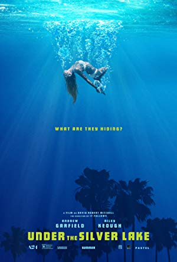

My Best 10 Films
- Suspiria
(Dario Argento. Italy: 1977)

- Repulsion
(Roman Polanski. United Kingdom: 1965)
- Pulse
(Kiyoshi Kurosawa. Japan: 2001)
- Ikiru
(Akira Kurosawa. Japan: 1952)

- Phantom of the Paradise
(Brian De Palma. United States: 1974)
- Under the Silver Lake
(David Robert Mitchell. United States: 2018)
 - The Cabin in the Woods
(Drew Goddard. United States: 2012)
- Kill Bill
(Quentin Tarantino. United States: 2003)
- Shigazo
(Japan: 2015) - Last Night in Soho
(Edgar Wright. United Kingdom: 2021)